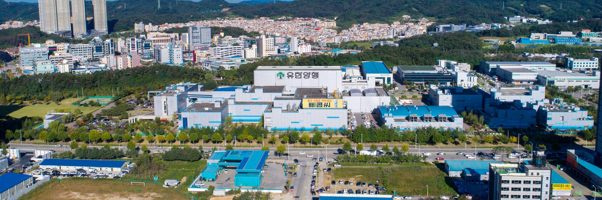
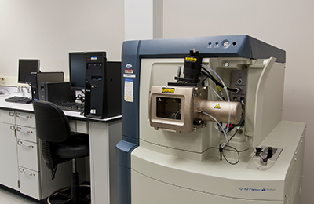
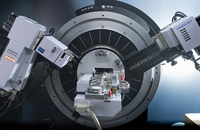
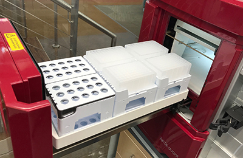
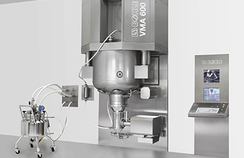
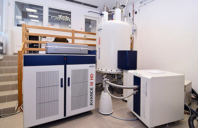
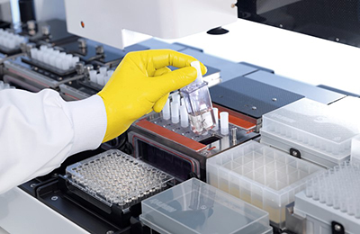
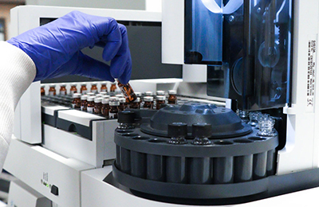
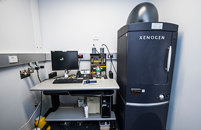

home> 연구개발>
주요설비
주요설비
국내 제약사 중 가장 넓은 연구소와 우수 연구시설을 보유하고 있습니다.

중앙연구소에서는 신약 후보물질 탐색과 약효평가에 필수적인 시설과 장비 (핵자기공명분석기(NMR), 질량분석기(LC-MS), XRD, 단백질 정제시스템(AKTA Avant150), 세포배양실 등), 새로운 제형 연구를 위한 장비 (다층타정기, one-pot 등), 영상분석기 (IVIS spectrum), 그리고, 규제 기관에서 승인한 실험동물시설과 같은 우수한 시설을 보유, 운용하고 있습니다.
-

- LC-MS 실
- 각종 액상크로마토그라피/질량분석기 장비를 운영하는 실험실입니다. 약물의 정성 및 정량분석, 단백질의 특성분석, 대사체 연구, 및 생체 시료 분석 등을 수행하고 있습니다.
- 
- XRD
- 유기 및 무기 화합물의 결정형 측정 및 결정다형연구에 사용하는 장비로서, Bruker AXS / D8 Advance를 보유하고 있습니다.
- 
- 단백질 정제시스템
- 바이오의약품의 개발과정에 필수적인 고순도 단백질을 분리 정제하는 장비로 구성된 실험실입니다. AKTA purifier, AKTA Avant, 및 AKTA pilot 등의 장비로 구성되어 있습니다.
- 
- One-pot 과립기
- 제형연구에 사용하는 장비로 VMA10 모델을 보유하고 있습니다. 단일 용기(One pot)내에서 과립의 습식 제조 및 건조 (진공, 마이크로웨이브 건조)가 모두 가능한 과립기입니다.
- 
- NMR Spectromete
- 신규 화합물의 화학 구조분석에 사용되는 장비로서 Bruker 400 MHz Avance, Agilent 600 MHz PremiumCOMPACT를 보유하고 있습니다
- 
- 세포배양실
- 바이오의약품의 생산에 필수적인 세포주 및 배양공정을 개발하는 실험실입니다. 무균작업대, CO2 배양기, 세포계수기, 세포 대사체 분석기, 바이오리액터(3~50L) 등으로 구성되어 있습니다.
-
- 다층타정기
- 의약품의 특수 제형 연구에 사용하는 장비로 FlexiTab 모델을 보유하고 있습니다. 단층정을 포함하여 다층정을 제조하는 장비입니다.
- 
- 시료분석실
- 신약 후보물질의 약물동태실험(흡수, 분포, 대사 및 배설)에 대한 각종 시료분석을 위한 실험실입니다. 약물의 정량적 분석과 대사체 프로파일 및 구조규명 등의 정성적 연구를 위한 고감도의 LC/MS/MS 장비가 갖추어져 있습니다.
- 
- IVIS spectrum
- 형광 혹은 레이저에 반응하는 미량의 발광물질을 감지하여, 약물이나 표지된 세포의 반응을 실시간으로 분석하는 장비 입니다. 기초 기전연구부터 후보물질탐색,전임상 효능실험 등 다양한 분야의 연구에 그 활용 가치가 높습니다.